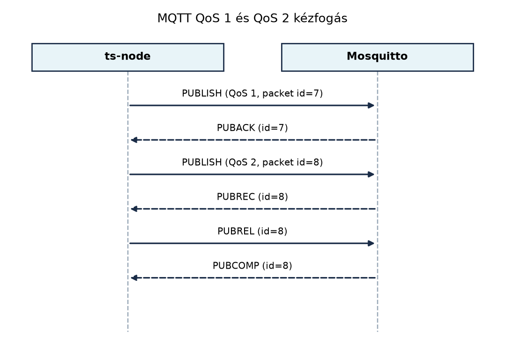

A TerraSense üvegházban a ts-node percenként
hőmérsékletet, páratartalmat és talajnedvességet küld MQTT-n. Ha a
hálózat pillanatnyi kimaradása miatt elveszik egy mérés, az nem
katasztrófa; ha viszont a backend kétszer dolgoz fel egy
öntözőparancsot, a szelep kétszer nyit, felesleges vízfogyasztást
okozva. Hasonlóan, ha a felhasználói felület lekérdezi az eszköz
aktuális állapotát, nem szeretné megvárni a következő telemetriai
üzenetet: az utolsó jelentett állapotnak azonnal rendelkezésre kell
állnia. Végül az üzemeltetőnek látnia kell, ha egy csomópont váratlanul
leállt – ehhez a brokernek a kapcsolat megszakadásakor automatikusan
jeleznie kell.
Ezeket a problémákat az MQTT kézbesítési garanciái (Quality of Service, QoS), a megőrzött üzenet (retained message) és a Last Will Testament (LWT) oldják meg. Az MQTT 5 ezen felül finomabb visszajelzéseket, tulajdonságokat és további szolgáltatásokat ad, amelyek a robusztus IoT-rendszerekben ma már gyakran alapkövetelmények.
Definíció (MQTT QoS). Az MQTT QoS a kiadványozótól a brokerig tartó, illetve a brokertől a feliratkozóig tartó üzenetkézbesítés garanciaszintje. A szabvány három szintet definiál:
Fontos különbség, hogy a QoS a két szakaszra (publisher→broker, broker→subscriber) külön értelmezett: a publisher QoS 2-vel küldhet, de a feliratkozó QoS 0-val kaphatja, ha úgy iratkozik fel. A broker az üzenetet a subscriber által kért maximális QoS-szel továbbítja.

A diagramon látható: QoS 1 esetén a PUBACK elvesztése után a
ts-node a DUP jelzővel újraküldi a PUBLISH-t, ez okozza a
duplikációt. A QoS 2 négylépéses kézfogása ezt a hálózati szintű
duplikációt kiküszöböli, de a feldolgozó oldali oldalhatás (pl.
szelepnyitás) duplikálódását már nem tudja megakadályozni, ahogy később
látni fogjuk.
Definíció (munkamenet, clean start). Az
MQTT-kapcsolat állapota: a kliens és a broker által tárolt
feliratkozások, ki nem kézbesített QoS 1/2 üzenetek és a klienshez
tartozó munkamenet-flag. Az MQTT 3.1.1-ben a
cleanSession=true azt jelenti, hogy a kapcsolat bontásakor
a broker mindent eldob; false esetén a munkamenet megmarad,
és a kliens újracsatlakozáskor folytathatja (offline üzenetek, meglévő
feliratkozások). Az MQTT 5 a clean start fogalmat
használja: minden csatlakozáskor eldönthető, hogy új munkamenetet
kezdünk-e, a session expiry intervallum pedig azt szabja
meg, hogy a broker a kapcsolat megszakadása után mennyi ideig őrizze meg
a munkamenetet.
Definíció (retained message). A broker az utolsó retained flaggel küldött üzenetet a topicra elmenti, és új feliratkozó csatlakozásakor azonnal elküldi neki. Ez a mechanizmus az állapot-jellegű adatok (pl. aktuális hőmérséklet, eszközstátusz) közzétételére való: a feliratkozó nem vár a következő időszakos publikálásra, hanem azonnal kap egy „utolsó ismert értéket”. Retained üzenet törlése üres payload-jú retained PUBLISH küldésével lehetséges.
Definíció (Last Will Testament, LWT). A kliens a csatlakozáskor megadhat egy will-üzenetet: topic, payload, QoS és retain flag. Ha a kliens nem szabályos DISCONNECT-tel bontja a kapcsolatot (pl. hálózati hiba, akkumulátor lemerülés, processz-összeomlás), a broker ezt az üzenetet közzéteszi a megadott topicra. Így a rendszer többi része értesül a váratlan kiesésről.
Az MQTT 5 legfontosabb újdonságai a TerraSense szempontjából:
0x10 – no matching
subscribers, 0x87 – not authorized), amely alapján a kliens
megkülönböztetheti a sikert a hiba típusától.trace-id vagy
ingest-version átvitele.$share/csoport/topic
formában; a broker az üzenetet a csoport egy tagjának továbbítja. Ezzel
a feldolgozás terhelése megosztható, de az üzenetek sorrendje az egyes
kliensek között nem garantált.response topic és correlation data
tulajdonságokkal a válaszüzenet visszaköthető egy adott kéréshez
anélkül, hogy a válasz topicját a payloadba kellene ágyazni.A következő táblázat összefoglalja a QoS-szintek kompromisszumait:
| Szempont | QoS 0 | QoS 1 | QoS 2 |
|---|---|---|---|
| Kézbesítési garancia | Legfeljebb egyszer | Legalább egyszer | Egyszer |
| Nyugtázás | Nincs | PUBACK | PUBREC/PUBREL/PUBCOMP |
| Üzenetduplikáció | Nincs | Lehetséges | Hálózati szinten nincs |
| Feldolgozói ismétlés | Nincs | Van, ha újra feldolgozzák | Van, ha a feldolgozó oldalhatása nem idempotens |
| Overhead | Legalacsonyabb | Közepes | Legmagasabb |
| Jellemző használat | Műszerfalra küldött telemetria, ahol néhány elvesztés elfogadható | Parancsok, riasztások, telemetria | Pénzügyi tranzakciók, olyan esetek, ahol a duplikáció súlyos |
A retain és LWT választásánál az alábbiakat érdemes mérlegelni:
state és status
topicja. Telemetriai idősoroknál a retain felesleges: az adott pillanat
mérési értéke elavulttá válik, és a feldolgozó a későbbi üzenetekkel
dolgozik.status topicra érkező
will-üzenetet retained flaggel érdemes küldeni, így a kiesést a később
csatlakozó feliratkozó is azonnal látja.A QoS 2 használata csábító, de a gyakorlatban több buktatót rejt: a broker és a kliens állapotgépének bonyolultsága nő, a kézfogás késleltetést ad, és ami a legfontosabb: a teljes rendszerre vetítve nem jelent „pontosan egyszeri” feldolgozást, mert az üzenet fogyasztója az adatbázisba írást vagy a szelepnyitást akkor is megismételheti, ha az üzenet maga egyszer érkezett. A helyes megoldás az at-least-once (QoS 1) és az idempotens feldolgozás kombinációja.
Tervezzük meg a TerraSense MQTT-topicjainak QoS, retain és LWT beállításait. A könyv korábbi konvenciója szerint a topicok:
terrasense/<site>/<node>/telemetryterrasense/<site>/<node>/stateterrasense/<site>/<node>/cmdterrasense/<site>/<node>/cmd/resultterrasense/<site>/<node>/statusA döntési táblázat ehhez:
| Topic | QoS | Retain | Indoklás |
|---|---|---|---|
telemetry |
1 | Nem | Idősor, ahol az elvesztés ritka, de a duplikáció kezelhető; retain felesleges |
state |
1 | Igen | Aktuális állapot; új feliratkozó azonnal látja |
cmd |
1 | Nem | Parancs; nem szabad retained üzenetként újra kiküldeni korábbi feliratkozóknak |
cmd/result |
1 | Nem | Válasz a parancsra; nem állapot, hanem esemény |
status |
1 (LWT) | Igen | Jelenlét; a retained garantálja, hogy új megfigyelő is tudja, mi az utolsó állapot |
A telemetria üzenetben már definiált seq monoton növekvő
sorszám az idempotens feldolgozás alapja. A backend a
(node_id, seq) párt egy rövid lejáratú cache-ben tárolja;
ha az adott pár már feldolgozásra került, az ismétlődő üzenetet eldobja.
Ezt a mintát fogja használni az Ingest: MQTT-ből a
backendbe, idempotensen alfejezet, valamint a Eseményvezérelt feldolgozás: Kafka és a kézbesítési
szemantika és a Parancsok és konfiguráció
lefelé: kézbesítés, nyugtázás, időkorlát alfejezet.
Példa a deduplikációhoz a ts-backendben (Java, Spring Boot környezetben, de csak a logika):
private final Set<DedupKey> processed = Collections.newSetFromMap(
new LinkedHashMap<DedupKey, Boolean>() {
@Override
protected boolean removeEldestEntry(Map.Entry<DedupKey, Boolean> eldest) {
return size() > 10_000;
}
});
public void onTelemetry(String nodeId, long seq, String payloadJson) {
DedupKey key = new DedupKey(nodeId, seq);
if (!processed.add(key)) {
// Duplikátum: QoS 1 újraküldés miatt érkezett, már feldolgoztuk.
return;
}
// Tényleges feldolgozás: TimescaleDB-be írás, riasztásvizsgálat, stb.
processTelemetry(payloadJson);
}A node_id és a seq együttesen egyedi kulcs;
a cache mérete korlátozza a memóriahasználatot, és a legrégebbi
bejegyzések törlődnek. Mivel a seq a csomópontonként
monoton növekvő, a csomópont újraindulásakor a node_id és a
seq kombinációja megismétlődhet, ezért a gyakorlatban a
ts időbélyeget is érdemes a kulcs részévé tenni, vagy a
seq-et nem felejtő memóriában tartani.
A retained üzenet és LWT működését a következőképp demonstrálhatjuk Mosquitto-val (a 2.x verzió alapértelmezetten csak localhost-on engedélyezi az anonim hozzáférést):
# 1. terminál: feliratkozás a státuszra és a parancsra
mosquitto_sub -h localhost -t 'terrasense/gh1/n001/status' -v
# 2. terminál: csatlakozás LWT-vel és retained státusz publikálása
mosquitto_pub -h localhost \
-t 'terrasense/gh1/n001/status' \
-m '{"online":true,"ts":1717000000000}' \
-r \
--will-topic 'terrasense/gh1/n001/status' \
--will-payload '{"online":false,"ts":1717000000000}' \
--will-retain
# A mosquitto_pub kilépése után a broker a will-üzenetet retained flaggel publikálja.A kliens hirtelen megszakadásakor a status topicra kerül
a will-üzenet, és mivel retained, az új feliratkozó is azonnal látja,
hogy a csomópont offline.
A QoS, retain és LWT beállítások helyességét a legegyszerűbben
mosquitto_sub és mosquitto_pub eszközökkel
ellenőrizhetjük. A fenti példában a retained státusz azonnal megjelenik
a feliratkozónál, amint csatlakozik; ezt a mosquitto_sub
kimenetén azonnal látjuk. A LWT akkor ellenőrizhető, ha a publish
klienst Ctrl+C-vel megszakítjuk anélkül, hogy DISCONNECT
csomagot küldött volna.
| Hibatünet | Lehetséges ok | Javítás |
|---|---|---|
| A feliratkozó nem kap retained üzenetet | A feliratkozás a retained publish után történt, de a broker nem tárolta (retain flag hiányzik) | Ellenőrizze a publish -r kapcsolóját és a broker
retain_available beállítását |
| A LWT nem jelenik meg a kapcsolat megszakadásakor | A kliens szabályos DISCONNECT-et küldött, vagy a will-topic hibás | Tesztelje a folyamat SIGKILL jelzésével, ellenőrizze a
will paramétereket |
| A QoS 1 üzenet duplikátumként érkezik, de a backend nem dobja el | Hiányzik a deduplikációs kulcs (pl. seq) vagy a cache
nem tartalmazza a feldolgozott kulcsokat |
Vezessen be node_id+seq (és
ts) alapú deduplikációt |
| Az MQTT 5 kliens nem kap reason code-ot | A broker vagy a kliens MQTT 3.1.1-re visszaminősít | Győződjön meg róla, hogy mindkét fél MQTT 5-öt tárgyal, és a CONNECT protokollszintje 5 |
QoS 1 használata idempotens feldolgozás nélkül.
A QoS 1 pontosan azért okozhat duplikátumot, mert a PUBACK hiánya miatt
az üzenetet újraküldik. Ha a fogadó oldal ezt nem kezeli, a
szelepparancs kétszer is végrehajtódik. Az Eszközszoftver-architektúra: rétegek és
állapotgépek alfejezetben tárgyalt valve_set_target
függvény idempotens, de a parancs rétegnek is deduplikálnia
kell.
A QoS 2-t „pontos kézbesítésnek” hiszik teljes rendszerre. A QoS 2 csak a broker és a kliens közötti üzenetszintű duplikációt szünteti meg, nem a fogyasztói oldalhatást. Aki azt állítja, hogy a QoS 2 pontosan egyszeri végponttól végpontig, az a kézbesítést összekeveri a feldolgozással.
A retained üzenetet telemetriára alkalmazzák. A telemetria idősor, ahol az utolsó érték nem releváns egy új feliratkozó számára; a retained üzenet ráadásul felesleges tárolást és hálózati forgalmat generál.
A LWT hiánya a jelenlétfigyelésnél. Ha az eszköz váratlanul leáll, a rendszer nem tudja megkülönböztetni a csendes működést a kieséstől. A LWT a legegyszerűbb módja a jelenlét kezelésének; enélkül a felhő csak a timeoutra hagyatkozhat, ami lassabb és pontatlanabb.
Fogalmi kérdés. Magyarázza el, miért nem garantálja a QoS 2 a pontosan egyszeri feldolgozást egy parancs végrehajtásánál. Milyen QoS-t érdemes választani a TerraSense öntözőparancsához, ha a parancs idempotens?
Tervezési feladat. Adott egy vízmérő, amely naponta egyszer küld egy aggregátumot és egy riasztást, ha a szivárgás észlelhető. Milyen QoS-t és retain beállítást választana az aggregátumhoz és a riasztáshoz? Indokolja.
Implementációs feladat a TerraSense-ben.
Készítsen konfigurációt a ts-node MQTT-klienséhez, amely a
telemetry topicra QoS 1-retain false, a state
topicra QoS 1-retain true, a cmd/result topicra QoS
1-retain false beállítással publikál, és a kapcsolódáskor LWT-t
regisztrál a status topicra. Írja le a pszeudokódot vagy a
Zephyr MQTT API hívásokat.
Hibakeresési feladat. A teszt során a
ts-backend kétszer dolgozza fel ugyanazt a telemetriai
üzenetet: a seq azonos, de a ts időbélyeg is
azonos. A deduplikációs cache 10 000 bejegyzést tartalmaz, és az
üzenetek közötti idő néhány másodperc. Mi lehet a hiba? (Tipp: a
DedupKey osztály equals metódusát
vizsgálja.)
A QoS 2 a kommunikációs rétegben kiküszöböli a hálózati
duplikációt, de a parancsot feldolgozó alkalmazás ettől még kétszer is
kiválthatja a szelepnyitást, ha például a PUBCOMP elvesztése miatt a
parancsfeldolgozó újraindul és újraolvassa az üzenetet, vagy ha a
feldolgozó oldali retry logika megismétli a végrehajtást. A helyes
választás at-least-once (QoS 1) idempotens parancsvégrehajtással: a
valve_set_target függvényt ismételten hívva ugyanazt az
állapotot állítja be, és a parancsfeldolgozó a seq alapján
eldobja a duplikátumot.
Az aggregátumhoz QoS 1-retain false: az adat idősor, ahol a napi érték elvesztése ritka, de ha elveszne, másnap újabb jön; a retain felesleges. A riasztáshoz QoS 1-retain true: a riasztás állapotjellegű, a feliratkozóknak azonnal tudniuk kell a legutóbbi riasztási állapotot, akár akkor csatlakoznak, amikor a riasztás már aktív. A retain miatt a riasztás törlését is explicit üres retained üzenettel kell megoldani.
Pszeudokód a Zephyr MQTT klienshez (a konkrét API függvénynevek verziófüggőek, ellenőrizze a telepített Zephyr dokumentációt):
struct mqtt_publish_param telemetry = {
.message.topic.qos = MQTT_QOS_1_AT_LEAST_ONCE,
.message.topic.topic.utf8 = "terrasense/gh1/n001/telemetry",
.message.topic.topic.size = sizeof("terrasense/gh1/n001/telemetry") - 1,
.message.payload.data = buf,
.message.payload.len = len,
.message_id = mqtt_allocate_msg_id(&client),
.dup_flag = 0,
.retain_flag = 0,
};
mqtt_publish(&client, &telemetry);
struct mqtt_publish_param state = telemetry;
state.message.topic.topic.utf8 = "terrasense/gh1/n001/state";
state.message.topic.topic.size = sizeof("terrasense/gh1/n001/state") - 1;
state.retain_flag = 1;
state.message_id = mqtt_allocate_msg_id(&client);
mqtt_publish(&client, &state);A LWT regisztrálás a CONNECT paraméterben: a will_topic
a status topic, a will payload
{"online":false} és a will_retain beállítás 1.
A will QoS szintén 1.
DedupKey osztály
equals és hashCode metódusa nincs összhangban:
ha az equals a node_id-et és a
seq-et hasonlítja, de a hashCode csak a
node_id-et használja, a Set nem találja meg a
meglévő bejegyzést, így minden üzenetet újként kezel. Megoldás: mindkét
mezőt szerepeltesse a hashCode-ban, vagy használjon rekord
típust (Java 21-ben
record DedupKey(String nodeId, long seq) {}), amely
automatikusan helyesen implementálja ezeket.Az MQTT QoS 0, 1 és 2 szintjei a publisher-broker-subscriber
szakaszokra külön-külön adnak kézbesítési garanciát. A QoS 1 legalább
egyszer kézbesít, ezért a fogadó oldalon idempotens feldolgozás
szükséges; a QoS 2 a hálózati duplikációt szünteti meg, de a feldolgozói
ismétlést nem. A retained üzenetek az állapottopicokhoz valók, a Last
Will a váratlan kiesés jelzésére szolgál. A TerraSense konvenciója:
telemetry QoS 1, retain false; state QoS 1,
retain true; cmd és cmd/result QoS 1, retain
false; status QoS 1, LWT retained true. Az MQTT 5 reason
code-jai, user properties, message expiry és shared subscriptionjei
finomabb vezérlést adnak. Továbbvitt eredmény: az
at-least-once és idempotens feldolgozás kombinációját használja az Ingest: MQTT-ből a backendbe, idempotensen, az Eseményvezérelt feldolgozás: Kafka és a kézbesítési
szemantika és a Parancsok és konfiguráció
lefelé: kézbesítés, nyugtázás, időkorlát alfejezet; a retained és
LWT beállításokat az Eszközárnyék és digitális iker:
kívánt és jelentett állapot és a Megfigyelhetőség végponttól végpontig: metrikák,
naplók, nyomkövetés alfejezet.
A QoS-szintek, munkamenet, retained és Last Will definíciói az MQTT
3.1.1 (OASIS) és MQTT 5.0 (OASIS) szabványokon alapulnak, amelyek stabil
részei az alapfogalmaknak. Az MQTT 5 reason code-jainak pontos listája
és a shared subscription szintaxisa verziófüggő: használat előtt
ellenőrizze a telepített Mosquitto 2.x verziójának dokumentációját. A
Zephyr MQTT API pontos függvénynevei és struktúrái a Zephyr aktuális
verziójától függenek; a példában jelzett pszeudokódot a telepített
Zephyr dokumentációja alapján kell adaptálni. A Mosquitto
mosquitto_pub és mosquitto_sub kapcsolói
(--will-*, -r) a 2.x verzióban elérhetők, de
az anonim hozzáférés és a hálózati beállítások a helyi konfigurációtól
függnek.